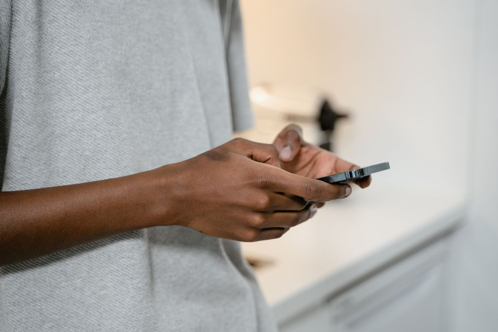

Kalau kamu membuka chat dan menemukan emoji wajah tertawa sampai menangis, kamu tidak sendirian. Google baru saja merilis daftar emoji paling populer 2026, lengkap dengan juaranya dari 2020 sampai 2025. Emoji wajah tertawa sampai menangis, yang biasa disebut ROFL, menempati peringkat pertama pada 2026. Laporan ini dimuat Detik iNET dan ramai dibahas media pada 27 Oktober 2026.
Daftar ini menarik karena tiap tahun juaranya selalu berganti. Ada tahun ketika hati merah muda yang menang, ada tahun ketika wajah meleleh yang naik, dan ada tahun ketika gerakan tangan mencubit yang paling sering dipakai. Artikel ini merangkum daftar lengkapnya, menjelaskan arti tiap emoji, dan menunjukkan kenapa emoji yang sama bisa terasa beda tergantung siapa yang mengirimnya, per 27 Oktober 2026.
Daftar emoji paling populer 2020 sampai 2026
Berikut daftar emoji yang menempati peringkat pertama tiap tahun menurut laporan Google Trends, seperti dilansir Detik iNET.
- 2020: Mata dan mulut. Pasangan emoji mata dan mulut dipakai untuk reaksi semacam "aku melihat" atau "aku tahu sesuatu", seperti kode diam-diam tahu.
- 2021: Wajah mengembuskan udara. Emoji ini dipakai untuk sesuatu yang begitu mengesankan sampai terasa seperti kehabisan napas.
- 2022: Wajah meleleh. Emoji ini dipakai untuk rasa malu, kelelahan mental, sampai kepanasan, baik secara harfiah maupun kiasan.
- 2023: Hati merah muda. Emoji ini jadi lambang kasih sayang yang lembut dan persahabatan.
- 2024: Wajah menggeleng. Emoji ini dipakai untuk menolak sesuatu dengan santai, tanpa harus berdebat panjang.
- 2025: Tangan mencubit. Emoji ini dipakai untuk bertanya dengan jenaka, atau menunjukkan sesuatu yang dianggap pas dan sempurna.
- 2026: Wajah tertawa sampai menangis. Emoji ini dipakai untuk sesuatu yang dianggap sangat lucu, dan kembali ke puncak setelah beberapa tahun digeser emoji lain.
Yang menarik, tidak ada satu emoji pun yang bertahan dua tahun berturut-turut sebagai juara. Setiap tahun selalu ada simbol baru yang naik, dan simbol lama turun tanpa banyak yang sadar.
Kenapa emoji tertawa sampai menangis bisa kembali nomor satu
Emoji wajah tertawa sampai menangis sebenarnya bukan pendatang baru. Simbol ini sudah lama dipakai untuk hal yang sangat lucu, dan posisinya di puncak pada 2026 menunjukkan humor masih jadi alasan utama orang memakai emoji. Pesan yang lucu sering tidak butuh penjelasan panjang, cukup satu emoji ini dan lawan bicara langsung paham maksudnya.
Ada satu hal yang perlu diluruskan. Daftar Google Trends ini mengukur pencarian dan tren, bukan jumlah pemakaian di keyboard. Ukuran lain, yaitu data pemakaian keyboard Gboard dari Google, mencatat hasil yang berbeda untuk 2025. Di sana, emoji menangis keras yang menempati peringkat pertama dunia pada 2025, menggeser wajah tertawa sampai menangis dan wajah tertawa dengan air mata ke peringkat kedua dan ketiga. Jadi kalau kamu melihat dua daftar yang berbeda, itu bukan berarti salah satu salah, melainkan dua cara mengukur yang berbeda.
Emoji yang sama bisa beda arti tergantung siapa yang kirim
Riset New York Times yang mengolah data Google 2025 menemukan hal lain yang tidak kalah menarik: pilihan emoji ternyata bisa menunjukkan usia pengirimnya. Emoji jempol, yang dulu dipakai semua orang untuk bilang setuju, kini mulai ditinggalkan anak muda dan dijuluki boomer emoji. Di data Google 2025, jempol masih bertahan di peringkat delapan, turun dari peringkat tujuh pada tahun sebelumnya.
Emoji wajah tertawa dengan air mata juga mulai ditinggalkan Gen Z karena dianggap terlalu sering dipakai. Sebagai gantinya, anak muda lebih sering memakai emoji menangis keras untuk hal yang lucu atau emosional. Di forum remaja r/teenagers, emoji itu muncul di lebih dari 20 persen komentar yang memakai emoji. Profesor linguistik Sali A. Tagliamonte dari University of Toronto menyebut remaja, khususnya remaja perempuan, selalu berada di garis depan perubahan bahasa, termasuk bahasa emoji.
Pelajaran praktisnya sederhana. Kalau kamu mengirim emoji ke orang yang usianya jauh berbeda, ada kemungkinan maknanya dibaca berbeda. Jempol yang kamu kirim sebagai tanda setuju bisa dibaca sebagai tanda ketus oleh lawan bicaramu. Tidak ada aturan bakunya, tapi mengenali pergeseran ini bisa menyelamatkan kamu dari salah paham yang tidak perlu.
Cara cek emoji yang lagi populer minggu ini
Kalau kamu penasaran emoji apa yang sedang naik minggu ini, ada dua cara cepat. Pertama, buka Google Trends dan ketik nama emoji atau kata yang berkaitan, lalu lihat apakah pencariannya sedang naik atau turun. Cara ini cocok kalau kamu mau tahu tren dalam jangka waktu tertentu.
Kedua, buka situs Emojiguide yang memperbarui daftar 100 emoji paling banyak digunakan setiap minggu. Per akhir Oktober 2026, patung Moai ada di peringkat pertama daftar mingguan itu, diikuti simbol kedokteran dan tongkat pancing. Daftar seperti ini berubah cepat, jadi hasil yang kamu lihat minggu depan bisa sudah berbeda.

Intinya
Emoji paling populer 2026 versi Google Trends adalah wajah tertawa sampai menangis, dan daftar tujuh tahun terakhir menunjukkan tidak ada juara yang bertahan. Arti emoji juga terus bergeser, terutama antar generasi, jadi satu simbol yang sama bisa dibaca berbeda oleh orang yang berbeda. Kalau kamu mau mengikuti trennya, cek Google Trends atau daftar mingguan Emojiguide, dan perhatikan siapa lawan bicaramu sebelum mengirim emoji yang berisiko disalahartikan. Per Oktober 2026, itu daftar lengkapnya.
← Kembali ke Other